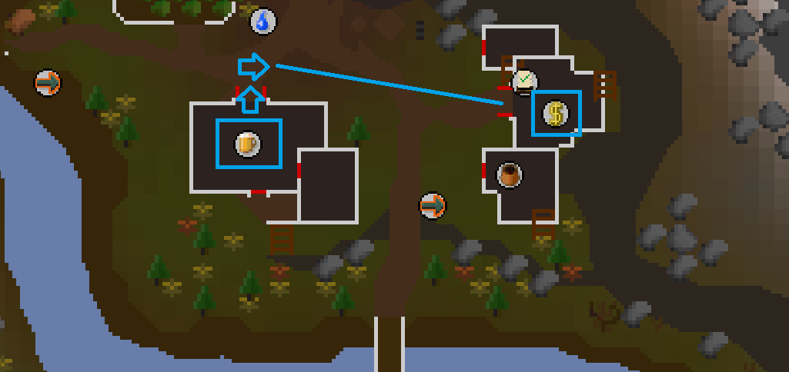

Old School RuneScape (OSRS)
|back
Resources:
Quetzacalli Rum Run
Guys... the price dropped to 150, wallahi we are cooked
Sometimes, you stumble across something by accident... This is one of those times for me.
In the Quetzacalli Gorge (locked behind membership, sorry bro you gotta pay $20 CAD a month for this one) there is 2 things that allow this money making method to happen:
- An unlimited stock bartender
- A bank within like 20 tiles of this bartender

This is what you'll need:
- 30k GP maximum (you can do less, but this is more than enough to sustain an hour or 2 of grinding if need be)
- 3-4 Extended / regular stamina potions as you will be running A LOT (Not needed necessarily, but it helps!)
With the rest of your inventory empty, you buy the rum from the bartender until you cannot hold any more. In my usual loadout, I end up with 24 rum, excluding the GP + potions
Then, you run and BANK ITTTTT
And the process repeats, you buy all the rum you can, bank it, run back and boom... Lets break down some math shall we?
A lot of people highlight the high selling point of beer from this same bartender, you buy for 2 GP, and sell for around 80... thats decent profit!
But uhhhh... Like 4 slots down there is a rum bottle being sold for 5 GP, which (on average over the course of the last week) sells for 350-400 GP on the GE...
Even with the volume discrepancy, the rum out performs in sheer profit by unfathomable amounts compared to beer.
Calculations:
Beer first:
On average, each run (assuming stamina never runs out) takes optimally 18-20 seconds a piece.
Total spend cost for 24 beer = 3 x 24 = 72 GP
Total spent per hour = 19 / 60 = 3.2 runs /m
Total runs per hour = 3.2 x 60 = 192 runs total
Total cost for all runs = 192 x 72 = 13,824 GP per hour
Average sell price on the GE for Beer is around 84, so 84 - 3 (for initial cost) is 81 per beer
Total hourly profit = 24 x 192 = 4,608 beer x 81 = 373.2k GP per hour
Not bad by any means! But lets compare this to the new cash cow...
Total spend cost for 24 beer = 5 x 24 = 120 GP
Total spent per hour = 19 / 60 = 3.2 runs /m
Total runs per hour = 3.2 x 60 = 192 runs total
Total cost for all runs = 192 x 120 = 23,040 GP per hour
Average sell price on the GE for Rum is around 375, so 375 - 5 (for initial cost) is 370 per rum
Total hourly profit = 24 x 192 = 4,608 rum x 370 = 1.71M GP per hour
The fact that this is available early game is not only utterly busted, but balances out the fact that you're not skill training while doing this.
I rest my case.